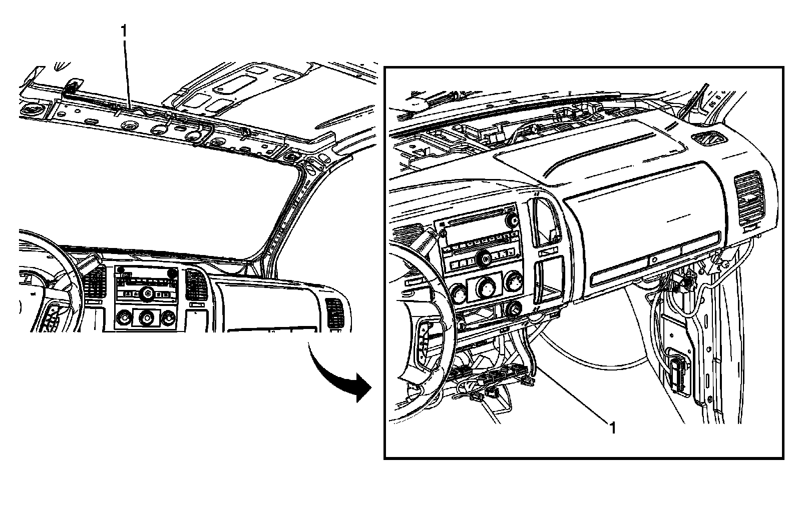
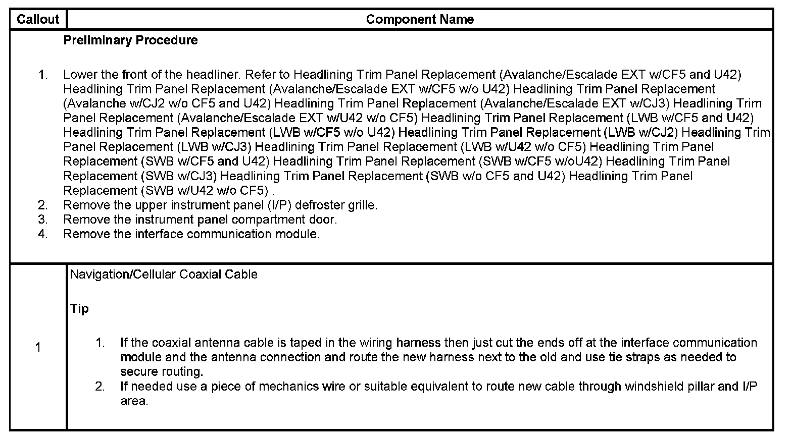

Operation CHARM
: Car repair manuals for everyone.
Home
>>
Cadillac
>>
2007
>>
Escalade ESV AWD V8-6.2L
>>
Repair and Diagnosis
>>
Accessories and Optional Equipment
>>
Cellular Phone
>>
Cellular Phone Microphone
>>
Service and Repair
>>
Mobile Telephone and Navigation Antenna Coaxial Cable Replacement
Mobile Telephone and Navigation Antenna Coaxial Cable Replacement
MOBILE TELEPHONE AND NAVIGATION ANTENNA COAXIAL CABLE REPLACEMENT

